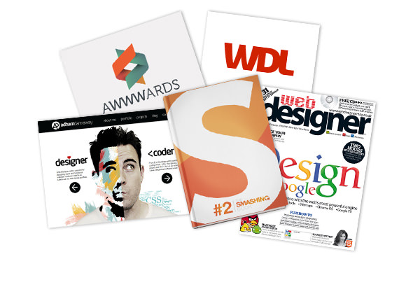

featured.
Some of the publications my work has been featured in.
I've been lucky enough to have my work featured in books, magazines and websites around the world. I've also spoken at various design events and enjoy sharing my love of design on social media.
